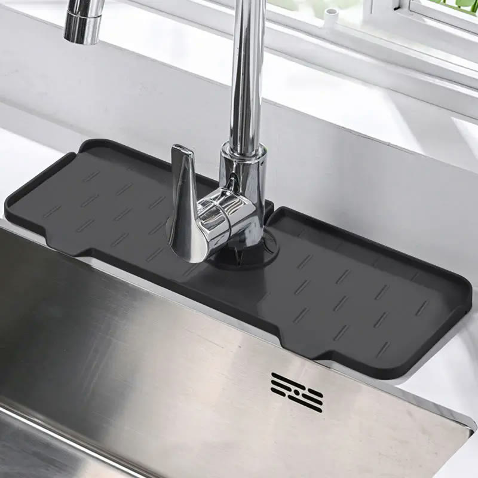
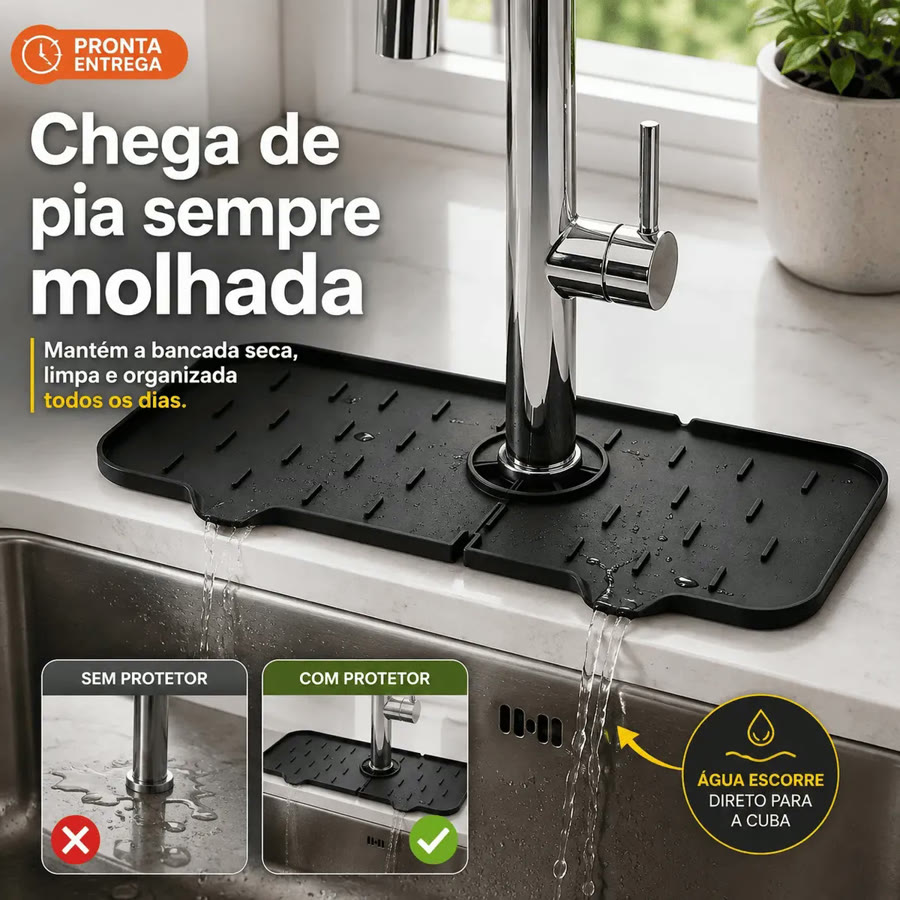
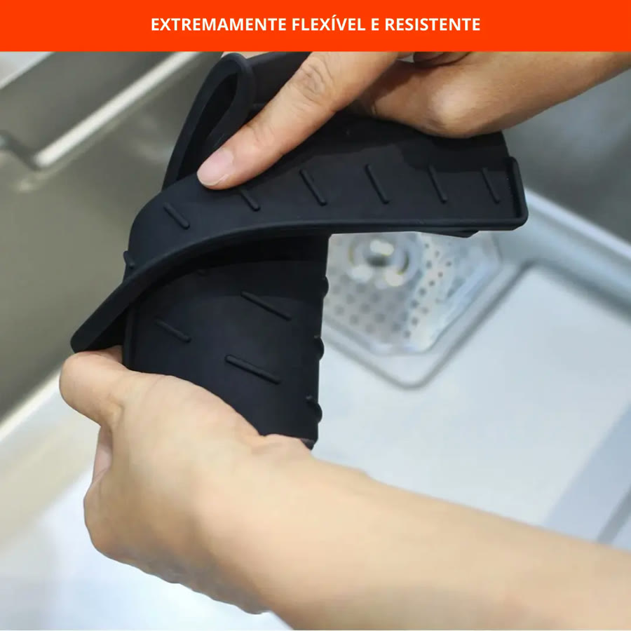
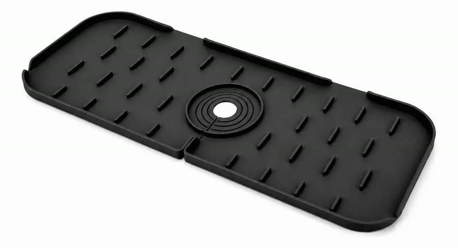

Achado nº 78
Confesso: seco a poça da torneira com pano.
Tapete de silicone para a base da torneira
★ 4,5 · mais de 500 avaliações no Mercado Livre




O que diz a página oficial do produto
- É um tapete de silicone preto que fica na bancada em volta da base da torneira, com relevos e furos de drenagem, da marca Estrela Utilidades
- Mede 37,4 por 14 centímetros e meio centímetro de espessura; o furo para a torneira tem cerca de 6,3 centímetros e, segundo o anúncio, dá para ajustar o tamanho
- Segundo o anúncio, os relevos levam a água dos respingos para a cuba, para ela não ficar parada em volta da torneira
- O próprio anúncio avisa que ele não absorve água: por ser de silicone, só direciona o escoamento
- Tem superfície antiderrapante e, segundo o anúncio, sai da bancada para lavar com água e sabão
- Não serve para torneira de parede; o anúncio pede para conferir as medidas e a base da torneira antes de comprar
- Vem 1 tapete
- No Mercado Livre, tem nota 4,5 com mais de 500 avaliações e mais de mil vendidos
Link de afiliado: se você comprar por ele, a Achadaria pode receber uma comissão, sem custo extra para você. Preço, estoque e entrega são da loja e podem mudar; confira lá antes de comprar.